30 % du Web utilise WordPress
WordPress est un Système de Gestion de Contenu (SGC) ou Content Management System (CMS). Fort de cette popularité, un véritable écosystème s’est développé autour de cet outil ces 15 dernières années. Présent dans les entreprises, universités, médias, et les institutions, il séduit par sa robustesse, sa constante évolution et son ergonomie reconnue. Nombre de startups, services SaaS, applications et agences spécialisés se sont développés grâce à WordPress, contribuant en retour à son développement.
WordPress, c’est aussi la solution leader en matière de e-commerce avec WooCommerce.
Depuis cinq ans, la communauté WordPress Bordeaux anime la communauté locale au cours de rencontres (meetups) conviviales.
Forte du succès de l’édition précédente, la communauté bordelaise a le plaisir d’organiser la deuxième édition du WordCamp Bordeaux, le 23 mars 2019 au Centre de Congrès Cité Mondiale.
Au programme : une quinzaine de conférences et ateliers. Des conférencier·e·s expert·e·s dans leurs domaines seront présent·e·s sur scène pour aborder toutes les facettes de l’écosystème WordPress : développement, design, marketing, référencement, e-commerce, accessibilité, qualité…
Nos futurs partenaires seront essentiels à la réussite de cet évènement à but non-lucratif.
Conscient de l’impact énergétique que représente WordPress dans l’empreinte carbone du Web, le WordCamp Bordeaux 2019 s’inscrit dans une démarche éco-responsable et locale.
Une attention toute particulière a été portée à l’ensemble des étapes de l’organisation de l’évènement : choix des partenaires et des prestataires, définition des sujets de conférences, conception du site et des goodies,…
Cette initiative débouchera sur la publication d’un livre vert compilant nos réflexions, les bonnes pratiques, ainsi que les difficultés rencontrées. Ce document, disponible gratuitement au téléchargement, pourra, nous l’espérons, servir de base de travail aux professionnel·e·s du Web, et créer une dynamique pour aider à réduire l’impact de nos conceptions Web sur l’environnement.
Le WordCamp Bordeaux se déroulera en plein cœur de Bordeaux dans le Centre de Congrès Cité Mondiale. Un site particulièrement apprécié pour son emplacement en plein cœur du quartier des Chartrons et l’architecture du Bordeaux XVIIIe, classée au patrimoine mondial de l’UNESCO, qui l’entoure.
Idéalement situé, cet espace nous permet de proposer une programmation ambitieuse, en plaçant l’expérience des participant·e·s au cœur de l’évènement. L’amphithéatre accueille les conférences et les salles annexes les ateliers du jour. La sonorisation haute qualité et les écrans disposés dans les deux salles garantissent à chaque participant·e une expérience optimale, y compris pour les personnes en situation de handicap.
Ce lieu nous permettra de réunir pas moins de 300 personnes pour cette journée d’échanges et de partage.
En sponsorisant le WordCamp Bordeaux (évènement à but non-lucratif) vous :
| Bordelaise 500 € | Magnum 1500 € | Jeroboam * 3000 € | |
| Stand pour votre communication | |||
| Affichage de votre logo sur les écrans entre les conférences |
|||
| 2 invitations pour le diner Orateurs du vendredi soir |
|||
| Niveau d’emplacement de votre logo sur les supports imprimés et numériques |
3e | 2e | 1er |
| Nombre de goodie(s) pour votre promotion | 1 | 2 | 3 |
| Article sur le site de l’évènement avec lien et logo vers votre site. |
|||
| Communication du partenariat sur le compte Twitter de l’évènement |
|||
| Nombre d’entrées pour l’évènement | 2 | 3 | 4 |
| Remerciement formel à l’ouverture | |||
| Prise de parole du sponsor pour 60 secondes devant la salle |